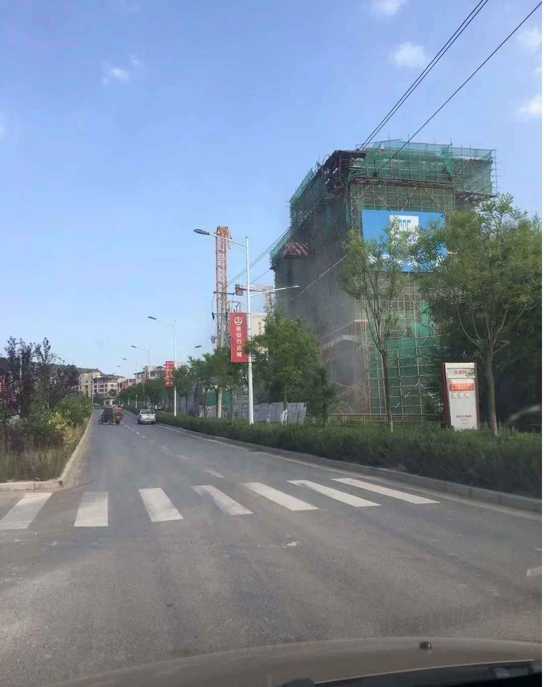
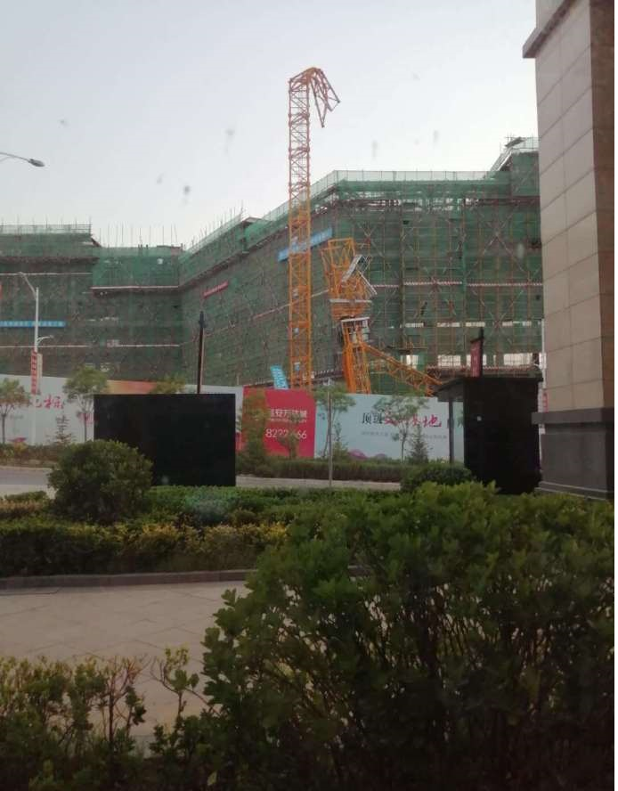

突发！6月18日、19日、20日三天连续发生塔吊倒塌事故
6月18日，四川自贡市富顺县三道桥红绿灯上行500米， 一在建工地塔吊施工作业时发生倒塔事故，导致1死1重伤。6月19日上午，长春凯旋路与北四环交会万龙国际城三期一在建工地塔吊发生事故，目前人员受伤情况未知！
6月20日8时3分，河南新郑市龙湖镇郑新快速路与祥和路交叉口东300米龙源建设工地，一台高20米塔吊在安装时断裂造成3名工人受伤（1名重伤、2名轻伤）。9点25分，1名重伤者抢救无效死亡，另2名受伤者生命体征平稳，暂无生命危险。
6月20日，陕西延安万达城项目塔吊施工作业时发生倒塌事故，有人员伤亡，具体事故原因还在调查中。


据不完全统计，去年建筑起重机械事故累计107起，累计162人死亡，平均每起死亡1.50人；建筑起重机械较大及以上事故累计12起，累计58人死亡，平均每起死亡4.8人；总结全国各地常年不断的塔吊倒塌事故原因，从大的方面看不外乎三个：一是塔吊安装与拆卸方面的问题；二是使用方面的问题；三是塔吊本身的质量问题。
1、安装与拆卸方面问题造成事故的原因
1）安装与拆卸队伍无资质，无证承揽拆装任务。安装与拆卸单位人员、设备、技术等方面均不具备条件的要求，是导致事故重要原因。
2）安装与拆卸无方案、无安全技术交底，凭经验。拆装单位不编制拆装方案，不进行安全技术交底，凭经验违章蛮干，是导致事故的直接原因。
3）安装与拆卸施工中违反拆装程序。拆装单位在拆装过程中不按塔吊使用说明书中关于拆装的先后顺序进行拆装，不按拆装方案和安全技术交底要求作业，图省事，凭想象。
4）不办理拆装申请和验收手续。塔吊使用单位和拆装单位不按规定办理拆装申请和验收手续，失去了政府主管部门把关的机会。
2、使用方面问题造成事故的原因
1）操作和指挥人员无证上岗。塔吊司机和信号指挥人员未按规定经过专业培训取得资格证书上岗作业，不具备相应专业技能和知识。
2）操作和指挥人员违章操作，违章指挥。如超载起吊、斜吊，在施工现场用塔吊吊住砼泵输送管打砼且随意回转等等。
3）操作人员对设备日常检查、保养不够，致使塔吊存在机械方面的安全隐患。如对塔吊力矩限制器性能了解不够，对其是否真正起作用不清楚，致使在其失效的情况下，误以为其工作正常而导致事故。忽视了人的因素，如在什么幅度、能够吊多重，心中无底或不明确。
4）对操作和指挥人员教育培训不够。很多单位只做到了岗前培训，而忽视了对操作人员在操作技能和安全意识方面的持续培训和提高，忽视了对指挥人员的持续培训。
3、塔吊产品本身质量问题造成事故的原因
1）设计问题。力矩限制器的设计存在缺陷，灵敏度较差；钢结构设计受力不合理，液压系统设计缺陷等等。
2）零配件问题。力矩限制器元件质量问题钢结构所用钢材材质问题；液压系统元件质量问题等等。
3）制造问题。
①钢结构焊接达不到要求：焊缝的高度不够，存在气孔、夹渣甚至虚焊等缺陷，特别是塔帽、大臂、平衡臂等部件上的重要连接部位存在焊接质量问题。
②钢结构几何尺寸与要求不符：下料未按要求，钢材截面尺寸达不到国家标准规定。
③出厂合格证及使用说明书的问题：无出厂合格证，属假冒伪劣产品。无批次说明，对原有设计的改动也没有标明。
如何预防塔吊倒塌事故？
1、坚持设备年限管理，选用名牌产品，重点规避老旧设备使用带来的安全风险
1）租赁塔吊应尽量使用5年以内的设备，租赁施工电梯、物料提升机、电动吊篮应尽量使用3年以内的设备，对一直在本单位使用的设备且租赁单位维保能力较强的，可适当放宽使用年限。
2）不使用QTZ40及以下塔吊。设备主要构配件无生产标牌、擅自用油漆涂抹标牌等情况的一律视为不合格设备，直接清退。
2、分包选择及设备把关
1）规模较大的单位应制定本公司的优秀租赁分包商评选办法和考核制度，通过企业规模、设备数量、注册资金、维保队伍人员建设等角度综合考核，确定本单位的优秀分包商队伍。
2）设备进场前，机管员或机械管理人员要实地查验，选取合格的设备并拍照存档后准许进场，进场后再次验收确认，合格后方可进行安装，安装完成要进行安装验收。这样避免带病设备的进场容易退场难情况，很多隐患其实都是发生在进场前，一旦进场安装，就很难再整改。
3）设备进场前应进行考察验收的内容：
①要求租赁单位有常驻工作场所（需考察），所有出租塔吊均为自有产权，无挂靠行为。
②安拆能力要求：拥有固定自有的安拆作业人员队伍，企业同时拥有安拆资质优先考虑。严禁临时拼凑安拆人员。
③维保能力：塔吊一般故障4小时内解决，较大故障2天内解决。要求每月一次检查保养（合同会约定，缺少会有相应处罚措施）。
④旧设备要求保养后方可进入施工现场。进场后再次验收合格方可开始安装。塔吊标准节严禁混用，单个品牌塔吊所有零部件需保持一致，原厂采购。
⑤塔吊结构件要求：塔吊结构件无开裂开焊和严重变形。所有标准节螺栓要求全部打开（包括套架内），锈蚀的要求割除。所有进场使用的螺栓不得存在严重锈蚀、变形、缩径磨损。塔吊结构件不得存在被电焊和私自改动。所有销轴开口销齐全、螺栓螺母外露三丝，螺栓垫片、弹簧垫、螺母或垫片、双螺母。
⑥塔吊电气限位要求：塔吊电气线路无老化开裂，PE线接通，限位罩壳齐全，灵敏有效（尤其断绳保护装置不得变形）。钢丝绳无断丝、起股、毛刺等。
⑦自身管理状况：有生产厂家背景的租赁单位优先考虑。单位有完善管理体系，有技术支撑保障能力（塔吊基础施工、附墙位置预埋等节点）。
3、过程管控
机械设备认真履行进场验收、安装验收后，一般不会存在较大问题。但使用过程中会因环境变化产生新的安全隐患，这时设备月度维保和检查就尤为重要。很多项目的月度检查就是填资料和走过场，这是严重的不负责任！月度检查时，设备租赁单位的专项检查应与总包单位的月度检查分开进行，总包机械管理人员的检查情况是对租赁单位检查情况的复查和监督。
原文编辑: EHS资讯
原文链接: https://ehsinfo.cn/2020/06/22/近日塔吊事故.html
版权声明: 转载请注明出处(必须保留作者署名及链接)